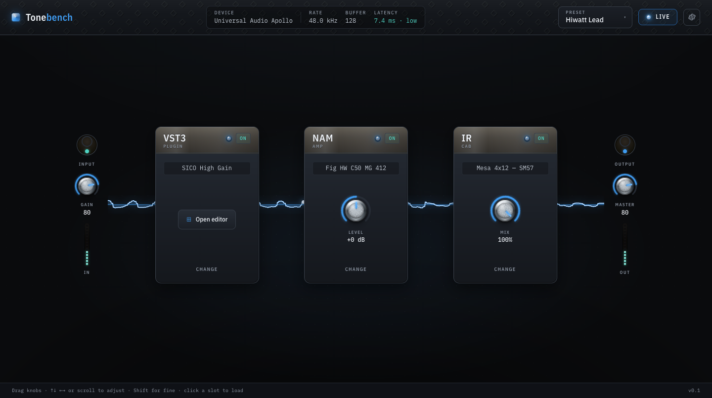
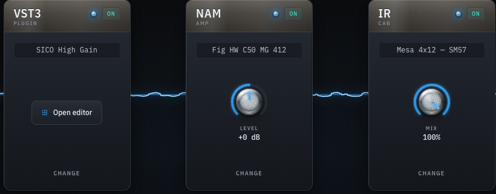

<meta charset="utf-8" />
<meta name="viewport" content="width=device-width, initial-scale=1" />
<title>Tonebench: guitar tone for macOS, Windows &amp; Linux</title>
<meta name="description" content="A lightweight, fast, free guitar-tone app for macOS, Windows, and Linux. Host a VST3 plugin, load a NAM amp model and an IR cab, chain them, and play with low latency." />
<meta property="og:title" content="Tonebench" />
<meta property="og:description" content="Load a VST3 plugin, a NAM amp model, and an IR cab. Chain them. Play. A fast, free tone app for macOS, Windows, and Linux." />
<meta name="theme-color" content="#0a0b0d" />

<style>
  :root {
    --bg: #0a0b0d;
    --panel: #14171c;
    --panel-2: #1b1f26;
    --line: #242a33;
    --line-soft: #1e232b;
    --accent: #3f9bf0;
    --accent-hi: #6db8ff;
    --teal: #4fd2c2;
    --silver: #cdd6df;
    --muted: #8a94a0;
    --head: #e9f3ff;
    --mono: ui-monospace, "SF Mono", "JetBrains Mono", Menlo, Consolas, monospace;
    --sans: -apple-system, BlinkMacSystemFont, "SF Pro Text", "SF Pro", Inter, system-ui, "Segoe UI", Roboto, Helvetica, Arial, sans-serif;
  }

  * { box-sizing: border-box; }

  html { -webkit-text-size-adjust: 100%; scroll-behavior: smooth; }

  body {
    margin: 0;
    background: var(--bg);
    color: var(--silver);
    font-family: var(--sans);
    font-size: 17px;
    line-height: 1.65;
    letter-spacing: 0.1px;
    -webkit-font-smoothing: antialiased;
    text-rendering: optimizeLegibility;
    overflow-x: hidden;
  }

  /* faint diamond/grid texture + a cool blue bloom behind the hero */
  body::before {
    content: "";
    position: fixed;
    inset: 0;
    z-index: -2;
    background:
      radial-gradient(900px 520px at 50% -8%, rgba(63, 155, 240, 0.12), transparent 70%),
      radial-gradient(700px 500px at 85% 8%, rgba(79, 210, 194, 0.05), transparent 70%);
    pointer-events: none;
  }
  body::after {
    content: "";
    position: fixed;
    inset: 0;
    z-index: -2;
    background-image:
      linear-gradient(rgba(205, 214, 223, 0.025) 1px, transparent 1px),
      linear-gradient(90deg, rgba(205, 214, 223, 0.025) 1px, transparent 1px);
    background-size: 44px 44px;
    background-position: center;
    mask-image: radial-gradient(circle at 50% 30%, #000 0%, transparent 72%);
    -webkit-mask-image: radial-gradient(circle at 50% 30%, #000 0%, transparent 72%);
    pointer-events: none;
  }

  a { color: var(--accent); text-decoration: none; }
  a:hover { color: var(--accent-hi); }

  .wrap { width: 100%; max-width: 1040px; margin: 0 auto; padding: 0 24px; }

  :where(a, button, .btn):focus-visible {
    outline: 2px solid var(--teal);
    outline-offset: 3px;
    border-radius: 6px;
  }

  /* ---- nav ---- */
  .nav {
    position: sticky;
    top: 0;
    z-index: 10;
    backdrop-filter: saturate(140%) blur(10px);
    -webkit-backdrop-filter: saturate(140%) blur(10px);
    background: rgba(10, 11, 13, 0.72);
    border-bottom: 1px solid var(--line);
  }
  .nav .wrap {
    display: flex;
    align-items: center;
    justify-content: space-between;
    height: 60px;
  }
  .nav .mark { font-size: 20px; letter-spacing: -0.01em; }
  .nav .links { display: flex; gap: 22px; align-items: center; }
  .nav .links a { color: var(--silver); font-size: 14px; font-weight: 500; }
  .nav .links a:hover { color: var(--head); }
  @media (max-width: 560px) { .nav .links a.hide-sm { display: none; } }

  /* ---- wordmark ---- */
  .mark {
    font-weight: 700;
    letter-spacing: -0.02em;
    color: var(--head);
  }
  .mark .tone { color: #f3f7fb; }
  .mark .bench { color: var(--accent); }

  /* ---- hero ---- */
  .hero { padding: 86px 0 36px; text-align: center; }

  /* the signature: a live oscilloscope threading through the wordmark */
  .scope-stage {
    position: relative;
    display: block;
  }
  .scope {
    position: absolute;
    left: 50%;
    top: 50%;
    transform: translate(-50%, -50%);
    width: min(1180px, 118vw);
    height: 260px;
    z-index: 0;
    pointer-events: none;
  }
  .hero h1 {
    position: relative;
    z-index: 1;
    margin: 0 0 18px;
    font-size: clamp(54px, 11vw, 116px);
    line-height: 0.96;
    font-weight: 700;
    letter-spacing: -0.035em;
  }

  .eyebrow {
    position: relative;
    z-index: 1;
    display: inline-block;
    font-family: var(--mono);
    font-size: 12px;
    letter-spacing: 0.22em;
    text-transform: uppercase;
    color: var(--muted);
    border: 1px solid var(--line);
    border-radius: 999px;
    padding: 6px 14px;
    margin-bottom: 30px;
    background: rgba(10, 11, 13, 0.4);
  }
  .eyebrow .dot {
    display: inline-block;
    width: 6px; height: 6px;
    border-radius: 50%;
    background: var(--teal);
    box-shadow: 0 0 8px var(--teal);
    margin-right: 8px;
    vertical-align: middle;
  }
  .tagline {
    position: relative;
    z-index: 1;
    margin: 0 auto 34px;
    max-width: 580px;
    font-size: clamp(17px, 2.3vw, 21px);
    color: var(--silver);
  }

  .btns { position: relative; z-index: 1; display: flex; gap: 14px; justify-content: center; flex-wrap: wrap; }
  .btn {
    display: inline-flex;
    align-items: center;
    gap: 9px;
    font-size: 15px;
    font-weight: 600;
    padding: 13px 22px;
    border-radius: 11px;
    border: 1px solid transparent;
    transition: transform 0.12s ease, background 0.15s ease, border-color 0.15s ease, box-shadow 0.15s ease;
    cursor: pointer;
  }
  .btn svg { width: 17px; height: 17px; flex: none; }
  .btn-primary {
    background: var(--accent);
    color: #04121f;
    box-shadow: 0 0 0 1px rgba(109, 184, 255, 0.35), 0 10px 30px -10px rgba(63, 155, 240, 0.7);
  }
  .btn-primary:hover { background: var(--accent-hi); color: #04121f; transform: translateY(-1px); }
  .btn-ghost {
    background: var(--panel);
    color: var(--head);
    border-color: var(--line);
  }
  .btn-ghost:hover { border-color: #3a434e; background: var(--panel-2); transform: translateY(-1px); }

  .platform {
    position: relative;
    z-index: 1;
    margin-top: 18px;
    font-family: var(--mono);
    font-size: 12px;
    letter-spacing: 0.12em;
    color: var(--muted);
  }

  /* ---- screenshot frames ---- */
  .shot {
    position: relative;
    border: 1px solid var(--line);
    border-radius: 16px;
    background: linear-gradient(180deg, #11141a, #0b0d11);
    padding: 10px;
    box-shadow:
      0 1px 0 rgba(205, 214, 223, 0.06) inset,
      0 40px 90px -30px rgba(0, 0, 0, 0.8);
  }
  .shot::before {
    /* thin teal signal line along the top edge */
    content: "";
    position: absolute;
    left: 16px; right: 16px; top: -1px;
    height: 1px;
    background: linear-gradient(90deg, transparent, var(--teal), transparent);
    opacity: 0.55;
  }
  .shot img {
    display: block;
    width: 100%;
    height: auto;
    border-radius: 9px;
    background: repeating-linear-gradient(135deg, #15181e, #15181e 12px, #171b22 12px, #171b22 24px);
    object-fit: cover;
  }
  .hero-shot { margin-top: 56px; }

  /* ---- sections ---- */
  section { padding: 66px 0; }
  .kicker {
    font-family: var(--mono);
    font-size: 12px;
    letter-spacing: 0.22em;
    text-transform: uppercase;
    color: var(--accent);
    margin: 0 0 16px;
  }
  h2 {
    font-size: clamp(26px, 4vw, 36px);
    line-height: 1.12;
    letter-spacing: -0.02em;
    color: var(--head);
    margin: 0 0 20px;
    font-weight: 650;
  }
  .lead { max-width: 640px; font-size: 19px; color: var(--silver); }
  .lead strong { color: var(--head); font-weight: 600; }

  .divider { height: 1px; background: var(--line); border: 0; margin: 0; }

  /* ---- feature grid ---- */
  .features {
    display: grid;
    grid-template-columns: repeat(3, 1fr);
    gap: 1px;
    background: var(--line);
    border: 1px solid var(--line);
    border-radius: 16px;
    overflow: hidden;
    margin-top: 10px;
  }
  .feat { background: var(--panel); padding: 26px 24px 28px; min-height: 150px; }
  .feat .n { font-family: var(--mono); font-size: 12px; color: var(--teal); letter-spacing: 0.1em; }
  .feat h3 { margin: 12px 0 8px; font-size: 17px; color: var(--head); font-weight: 600; letter-spacing: -0.01em; }
  .feat p { margin: 0; font-size: 15px; color: var(--muted); line-height: 1.55; }
  @media (max-width: 820px) { .features { grid-template-columns: repeat(2, 1fr); } }
  @media (max-width: 520px) { .features { grid-template-columns: 1fr; } }

  /* ---- how it works chain ---- */
  .how { display: grid; grid-template-columns: 1fr 1fr; gap: 48px; align-items: center; }
  .chain {
    display: flex;
    flex-direction: column;
    gap: 10px;
    background: var(--panel);
    border: 1px solid var(--line);
    border-radius: 16px;
    padding: 22px;
  }
  .chain .row {
    display: flex;
    align-items: center;
    gap: 14px;
    background: var(--panel-2);
    border: 1px solid var(--line);
    border-radius: 11px;
    padding: 13px 15px;
  }
  .chain .row .tag {
    font-family: var(--mono);
    font-size: 11px;
    letter-spacing: 0.1em;
    color: var(--accent);
    background: rgba(63, 155, 240, 0.1);
    border: 1px solid rgba(63, 155, 240, 0.25);
    border-radius: 6px;
    padding: 4px 8px;
    white-space: nowrap;
  }
  .chain .row .lbl { color: var(--head); font-size: 15px; font-weight: 500; }
  .chain .row .sub { color: var(--muted); font-size: 13px; }
  .chain .arrow { text-align: center; line-height: 0.6; }
  .chain .arrow span { color: #39424d; font-size: 14px; }
  @media (max-width: 760px) { .how { grid-template-columns: 1fr; gap: 30px; } }

  /* ---- footer ---- */
  footer { border-top: 1px solid var(--line); padding: 44px 0 60px; }
  .foot { display: flex; justify-content: space-between; align-items: flex-start; gap: 24px; flex-wrap: wrap; }
  .foot .mark { font-size: 19px; }
  .foot p { margin: 8px 0 0; font-size: 14px; color: var(--muted); max-width: 420px; }
  .foot .cols { display: flex; gap: 48px; flex-wrap: wrap; }
  .foot .col a { display: block; color: var(--silver); font-size: 14px; margin-bottom: 9px; }
  .foot .col a:hover { color: var(--head); }
  .foot .col .h {
    font-family: var(--mono);
    font-size: 11px;
    letter-spacing: 0.16em;
    text-transform: uppercase;
    color: var(--muted);
    margin-bottom: 14px;
  }
  .license {
    margin-top: 34px;
    padding-top: 22px;
    border-top: 1px solid var(--line);
    font-size: 13px;
    color: var(--muted);
    display: flex;
    justify-content: space-between;
    gap: 16px;
    flex-wrap: wrap;
  }
  .license .mono { font-family: var(--mono); letter-spacing: 0.05em; }

  @media (prefers-reduced-motion: reduce) {
    html { scroll-behavior: auto; }
    * { transition: none !important; }
  }
</style>

<nav class="nav">
  <div class="wrap">
    <span class="mark"><span class="tone">Tone</span><span class="bench">bench</span></span>
    <span class="links">
      <a href="#what" class="hide-sm">What it is</a>
      <a href="#features" class="hide-sm">Features</a>
      <a href="#how" class="hide-sm">How it works</a>
      <a href="https://github.com/jcjmcclean/tonebench">GitHub</a>
    </span>
  </div>
</nav>

<main>
<header class="hero">
  <div class="wrap">
    <span class="eyebrow"><span class="dot"></span>Native desktop tone app</span>
    <div class="scope-stage">
      <canvas class="scope" aria-hidden="true"></canvas>
      <h1 class="mark"><span class="tone">Tone</span><span class="bench">bench</span></h1>
    </div>
    <p class="tagline">Load a plugin, an amp model, and a cab. Chain them. Play. The simple tone rig that sits in the middle, free and fast.</p>
    <div class="btns">
      <a class="btn btn-primary" href="https://github.com/jcjmcclean/tonebench/releases">
        <svg viewBox="0 0 24 24" fill="none" stroke="currentColor" stroke-width="2" stroke-linecap="round" stroke-linejoin="round" aria-hidden="true"><path d="M12 3v12m0 0 4-4m-4 4-4-4"/><path d="M4 17v2a2 2 0 0 0 2 2h12a2 2 0 0 0 2-2v-2"/></svg>
        Download
      </a>
      <a class="btn btn-ghost" href="https://github.com/jcjmcclean/tonebench">
        <svg viewBox="0 0 24 24" fill="currentColor" aria-hidden="true"><path d="M12 .5A11.5 11.5 0 0 0 .5 12a11.5 11.5 0 0 0 7.86 10.92c.58.1.79-.25.79-.55v-2c-3.2.7-3.88-1.37-3.88-1.37-.53-1.34-1.3-1.7-1.3-1.7-1.06-.72.08-.71.08-.71 1.17.08 1.78 1.2 1.78 1.2 1.04 1.79 2.74 1.27 3.4.97.11-.76.41-1.27.74-1.56-2.55-.29-5.23-1.28-5.23-5.7 0-1.26.45-2.29 1.2-3.1-.12-.3-.52-1.47.11-3.06 0 0 .98-.31 3.2 1.18a11 11 0 0 1 5.82 0c2.22-1.5 3.2-1.18 3.2-1.18.63 1.59.23 2.76.11 3.06.75.81 1.2 1.84 1.2 3.1 0 4.43-2.69 5.41-5.25 5.69.42.37.8 1.1.8 2.22v3.29c0 .31.21.66.8.55A11.5 11.5 0 0 0 23.5 12 11.5 11.5 0 0 0 12 .5Z"/></svg>
        View on GitHub
      </a>
    </div>
    <p class="platform">macOS · Windows · Linux · AGPLv3</p>

    <div class="shot hero-shot">
      <picture>
        <source srcset="assets/hero.webp" type="image/webp" />
        
      </picture>
    </div>
  </div>
</header>

<hr class="divider" />

<section id="what">
  <div class="wrap">
    <p class="kicker">What it is</p>
    <h2>A tone rig that does one thing well</h2>
    <p class="lead">Tonebench is a lightweight, free guitar-tone app for macOS, Windows, and Linux. You host a VST3 plugin, load a <strong>Neural Amp Modeler</strong> amp and an impulse-response cab, then play guitar through the chain with low latency. It started when a friend built an amp as a VST3 plugin and sent it over, and buying a whole app just to try one plugin (next to the NAM models and IR cabs I already used) made no sense.</p>
  </div>
</section>

<section id="features">
  <div class="wrap">
    <p class="kicker">What it does</p>
    <h2>Everything you need in the signal path, nothing you don't</h2>
    <div class="features">
      <div class="feat">
        <div class="n">01</div>
        <h3>Host VST3 plugins</h3>
        <p>Drop in any VST3 instrument or effect and run it live in the chain.</p>
      </div>
      <div class="feat">
        <div class="n">02</div>
        <h3>NAM amp models</h3>
        <p>Load Neural Amp Modeler captures with real-time resampling to your session rate.</p>
      </div>
      <div class="feat">
        <div class="n">03</div>
        <h3>IR cab sims</h3>
        <p>Load impulse-response cabinets with zero added latency through the convolver.</p>
      </div>
      <div class="feat">
        <div class="n">04</div>
        <h3>Per-slot bypass</h3>
        <p>Chain plugin, amp, and cab in order, and bypass any slot without breaking the flow.</p>
      </div>
      <div class="feat">
        <div class="n">05</div>
        <h3>Presets</h3>
        <p>Save a full chain and recall it the next time you pick up the guitar.</p>
      </div>
      <div class="feat">
        <div class="n">06</div>
        <h3>Live signal scope</h3>
        <p>Watch the waveform move as you play, so you can see what the chain is doing.</p>
      </div>
    </div>
  </div>
</section>

<section id="how">
  <div class="wrap">
    <div class="how">
      <div>
        <p class="kicker">How it works</p>
        <h2>Built like a studio instrument</h2>
        <p class="lead">Audio runs through an ordered chain on the realtime thread: plugin, then amp, then cab, with each slot resampled and convolved in place. The interface is a React app living in a webview on its own thread, so drawing the scope and moving knobs never costs you latency. Native C++ and JUCE underneath keep it fast and small.</p>
      </div>
      <div class="chain" aria-hidden="true">
        <div class="row"><span class="tag">IN</span><span><span class="lbl">Guitar</span></span></div>
        <div class="arrow"><span>&#9662;</span></div>
        <div class="row"><span class="tag">VST3</span><span><span class="lbl">Plugin</span> <span class="sub">your friend's amp</span></span></div>
        <div class="arrow"><span>&#9662;</span></div>
        <div class="row"><span class="tag">NAM</span><span><span class="lbl">Amp model</span> <span class="sub">real-time resampled</span></span></div>
        <div class="arrow"><span>&#9662;</span></div>
        <div class="row"><span class="tag">IR</span><span><span class="lbl">Cab sim</span> <span class="sub">zero added latency</span></span></div>
        <div class="arrow"><span>&#9662;</span></div>
        <div class="row"><span class="tag">OUT</span><span><span class="lbl">Speakers</span></span></div>
      </div>
    </div>

    <div class="shot" style="margin-top:48px">
      <picture>
        <source srcset="assets/detail.webp" type="image/webp" />
        
      </picture>
    </div>
  </div>
</section>
</main>

<footer>
  <div class="wrap">
    <div class="foot">
      <div>
        <span class="mark"><span class="tone">Tone</span><span class="bench">bench</span></span>
        <p>A fast, free guitar-tone app for macOS, Windows, and Linux. The simple middle ground between amp sims that run out of room and the ones that get in your way.</p>
      </div>
      <div class="cols">
        <div class="col">
          <div class="h">Project</div>
          <a href="https://github.com/jcjmcclean/tonebench">Source on GitHub</a>
          <a href="https://github.com/jcjmcclean/tonebench/releases">Download</a>
          <a href="https://github.com/jcjmcclean/tonebench/issues">Report an issue</a>
        </div>
        <div class="col">
          <div class="h">Built on</div>
          <a href="https://juce.com/">JUCE</a>
          <a href="https://www.neuralampmodeler.com/">Neural Amp Modeler</a>
          <a href="https://www.gnu.org/licenses/agpl-3.0.html">AGPLv3 license</a>
        </div>
      </div>
    </div>
    <div class="license">
      <span>Released under the <a href="https://www.gnu.org/licenses/agpl-3.0.html">GNU AGPLv3</a>. Built on JUCE and NAM.</span>
      <span class="mono">&copy; 2026 Tonebench</span>
    </div>
  </div>
</footer>

<script>
/* Live oscilloscope signature: an electric-blue guitar signal threading
   through the wordmark. Tiny, vanilla, GPU-light. It pauses when offscreen
   or the tab is hidden, and never runs under prefers-reduced-motion. */
(function () {
  var canvas = document.querySelector(".scope");
  if (!canvas) return;
  var ctx = canvas.getContext("2d", { alpha: true });
  if (!ctx) return;

  var reduce = window.matchMedia("(prefers-reduced-motion: reduce)");
  var dpr = 1, w = 0, h = 0, raf = 0, running = false, visible = true, onscreen = true;

  function resize() {
    dpr = Math.min(window.devicePixelRatio || 1, 2);
    var r = canvas.getBoundingClientRect();
    w = Math.max(1, Math.round(r.width));
    h = Math.max(1, Math.round(r.height));
    canvas.width = Math.round(w * dpr);
    canvas.height = Math.round(h * dpr);
    ctx.setTransform(dpr, 0, 0, dpr, 0, 0);
    if (!running) draw(performance.now()); // keep a crisp static frame
  }

  // One traveling composite waveform with a slow "pluck" envelope so it
  // breathes like a plucked string instead of a flat test tone.
  function draw(t) {
    var mid = h / 2;
    var time = t / 1000;
    var env = 0.62 + 0.38 * Math.sin(time * 0.9);         // amplitude breathing
    var amp = (h * 0.17) * env;

    ctx.clearRect(0, 0, w, h);

    // faint zero-line
    ctx.lineWidth = 1;
    ctx.strokeStyle = "rgba(205,214,223,0.06)";
    ctx.beginPath();
    ctx.moveTo(0, mid);
    ctx.lineTo(w, mid);
    ctx.stroke();

    var step = w < 560 ? 5 : 3;
    var k = (Math.PI * 2) / w;

    function path(scale, speed, detune) {
      ctx.beginPath();
      for (var x = 0; x <= w; x += step) {
        var p = x * k;
        var y = Math.sin(p * 3 + time * speed) * 0.6
              + Math.sin(p * 7 - time * speed * 1.7 + detune) * 0.3
              + Math.sin(p * 13 + time * speed * 0.6) * 0.14;
        // taper the ends so the signal fades in and out at the edges
        var taper = Math.sin(Math.PI * (x / w));
        var yy = mid + y * amp * scale * taper;
        if (x === 0) ctx.moveTo(x, yy); else ctx.lineTo(x, yy);
      }
      ctx.stroke();
    }

    // teal ghost trail (used sparingly, sits behind)
    ctx.lineWidth = 1.2;
    ctx.strokeStyle = "rgba(79,210,194,0.22)";
    path(0.82, 2.0, 1.1);

    // main electric-blue trace with a soft glow
    ctx.lineJoin = "round";
    ctx.shadowColor = "rgba(63,155,240,0.55)";
    ctx.shadowBlur = 14;
    ctx.lineWidth = 2.1;
    ctx.strokeStyle = "#3f9bf0";
    path(1, 2.4, 0);
    ctx.shadowBlur = 0;

    // bright leading dot riding the crest
    var lx = (time * 150) % w;
    var lp = lx * k;
    var ly = mid + (Math.sin(lp * 3 + time * 2.4) * 0.6
           + Math.sin(lp * 7 - time * 2.4 * 1.7) * 0.3) * amp * Math.sin(Math.PI * (lx / w));
    ctx.fillStyle = "#6db8ff";
    ctx.shadowColor = "rgba(109,184,255,0.9)";
    ctx.shadowBlur = 12;
    ctx.beginPath();
    ctx.arc(lx, ly, 2.6, 0, Math.PI * 2);
    ctx.fill();
    ctx.shadowBlur = 0;
  }

  function frame(t) {
    draw(t);
    raf = requestAnimationFrame(frame);
  }
  function start() {
    if (running || reduce.matches || !visible || !onscreen) return;
    running = true;
    raf = requestAnimationFrame(frame);
  }
  function stop() {
    running = false;
    if (raf) cancelAnimationFrame(raf);
    raf = 0;
  }

  resize();
  var rt;
  window.addEventListener("resize", function () {
    clearTimeout(rt);
    rt = setTimeout(resize, 150);
  });

  document.addEventListener("visibilitychange", function () {
    visible = !document.hidden;
    visible ? start() : stop();
  });

  if ("IntersectionObserver" in window) {
    new IntersectionObserver(function (es) {
      onscreen = es[0].isIntersecting;
      onscreen ? start() : stop();
    }, { threshold: 0 }).observe(canvas);
  }

  if (reduce.addEventListener) {
    reduce.addEventListener("change", function () {
      reduce.matches ? (stop(), draw(0)) : start();
    });
  }

  if (reduce.matches) draw(0); else start();
})();
</script>
